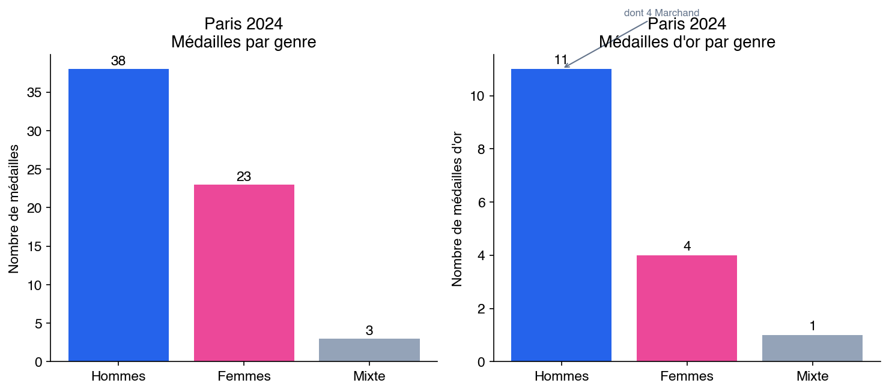
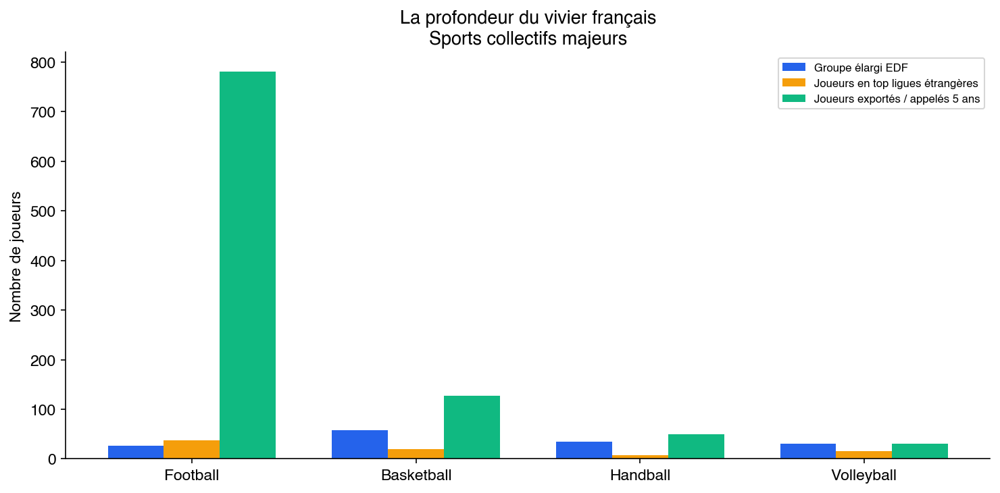

La puissance collective
La France ne produit pas de Usain Bolt, pas de Michael Phelps, pas de Carl Lewis. Elle produit des équipes. Des sélections nationales qui dominent leur discipline pendant des décennies, des générations de joueurs qui alimentent les meilleures ligues du monde, des collectifs dont la régularité au plus haut niveau n’a d’équivalent dans aucune autre nation européenne. Huit des soixante-quatre médailles de Paris 2024 proviennent des sports collectifs. Aux Jeux de Tokyo, c’était cinq sur trente-trois. La tendance est ancienne, profonde, et elle raconte quelque chose de spécifique sur le système sportif français : sa capacité à fabriquer de l’excellence collective et son incapacité symétrique à produire, dans la durée, des champions individuels de rang mondial. Cet article examine la puissance collective française sport par sport, avant d’en proposer une taxonomie économique et d’en tirer les conséquences analytiques.
Sport par sport
Handball : l’hégémonie silencieuse
Le handball masculin français constitue, en termes de palmarès, la plus grande réussite de l’histoire du sport collectif mondial toutes nations confondues. Six titres de champion du monde (1995, 2001, 2009, 2011, 2015, 2017), quatre titres de champion d’Europe (2006, 2010, 2014, 2024), trois titres olympiques (2008, 2012, 2020). La France est la seule nation à avoir détenu simultanément les trois titres majeurs – Jeux olympiques, Championnat du monde, Championnat d’Europe – et elle l’a fait deux fois (2009-2010, 2015-2016). Sur trois décennies, de la génération Costantini (Richardson, Jackson, Gilles, Omeyer, Karabatic) à la génération suivante, la continuité au sommet est sans précédent. Huit médailles olympiques au total : quatre en or, trois en argent, une en bronze, entre 1992 et 2024.
Le handball féminin prolonge cette domination. Championnes olympiques à Tokyo en 2021, triples championnes du monde (2003, 2017, 2023), les Bleues ajoutent une médaille d’argent à Paris 2024. La France est la seule nation au monde où les deux sélections, masculine et féminine, figurent simultanément et durablement dans le top 3 mondial.
Deux faits éclairent la singularité du modèle. Le premier est l’absence totale de visibilité internationale de la Starligue, le championnat professionnel français. Aucune diffusion significative hors de France, aucune attractivité pour les meilleurs joueurs étrangers comparable à ce que proposent les ligues allemande ou espagnole. La Starligue n’est pas le produit. L’équipe de France est le produit. Le second fait est l’arrivée en février 2025 de Talant Dujshebaev, entraîneur d’origine kirghize naturalisé espagnol, à la tête de l’équipe masculine, après le départ de Guillaume Gille. C’est seulement le deuxième sélectionneur étranger de l’histoire du handball français. Pendant trente ans, le système a fonctionné en circuit fermé – entraîneurs français, méthodes françaises, école française de pensée tactique. L’ouverture à un regard extérieur n’est pas un caprice. C’est l’aveu que le carburant interne ne suffit plus. Le handball français est un succès, mais un succès fragile : la Starligue ne génère pas de revenus d’exportation, les meilleurs joueurs partent dans les ligues étrangères, le nombre de licenciés oscille autour d’un plateau malgré treize titres majeurs. Le système n’est pas autosuffisant comme le rugby (où le Top 14 finance le cercle vertueux). Il est alimenté par l’argent public et par la qualité d’une lignée de coaches – Costantini, Onesta – qui a porté le handball français pendant trente ans mais qui ne se renouvelle pas mécaniquement. Recruter Dujshebaev, c’est reconnaître que la lignée a besoin d’être irriguée de l’extérieur pour ne pas s’épuiser.
Basketball : de la marge au pipeline industriel
L’histoire du basketball français à l’international commence par un rejet. En 1997, Tariq Abdul-Wahad devient le premier Français drafté en NBA, sélectionné au onzième rang par les Sacramento Kings. L’INSEP l’avait écarté. C’est par la NCAA qu’il accède au plus haut niveau : recruté d’abord par l’université du Michigan – l’une des plus prestigieuses du basketball universitaire, celle du Fab Five –, il est ensuite transféré à San Jose State, où il explose et attire l’attention des scouts NBA. Ce parcours marginal, presque accidentel, est devenu en vingt-cinq ans un pipeline industriel. En 2025, dix-neuf Français évoluent en NBA. La trajectoire est vertigineuse : un joueur en 1997, trois en 2001 (dont Tony Parker, futur quadruple champion NBA), dix en 2010, quatorze en 2024, dix-neuf en 2025, dont Victor Wembanyama, premier choix de la Draft 2023, considéré comme le prospect le plus complet depuis LeBron James. La France est la deuxième nation exportatrice de joueurs NBA derrière les États-Unis eux-mêmes.
Le pipeline repose sur une infrastructure de détection et de formation sans équivalent en Europe : trente et un pôles espoirs régionaux alimentent les centres de formation des dix-huit clubs professionnels et l’INSEP, qui alimentent à leur tour les clubs professionnels français puis la NBA où les ligues européennes de premier plan. En parallèle, la filière NCAA s’est structurée : soixante-treize Français évoluaient en NCAA Division I lors de la saison 2024-2025, dont trente-quatre femmes et trente-neuf hommes.
Le bilan olympique reflète cette montée en puissance progressive : huit médailles au total – sept d’argent et une de bronze – mais aucun titre. Finalistes malheureux à Paris 2024 (hommes et femmes), finalistes à Tokyo 2020 (hommes), médaille de bronze (femmes) aux mêmes Jeux. Le basketball français est la démonstration la plus pure du modèle collectif français : une capacité à produire massivement des joueurs de niveau mondial, une incapacité à franchir la dernière marche. La profondeur du vivier est telle que la Fédération française de basketball a dû refuser quatre-vingt mille demandes de licences après les Jeux de Paris 2024, faute de capacité d’accueil dans les clubs.
Football : la richesse paradoxale
Le football français est un cas à part. Par sa masse (2,16 millions de licenciés, première fédération de France), par sa richesse (3,98 milliards d’euros de revenus de transferts internationaux entre 2014 et 2024, premier rang mondial), par son palmarès (deux Coupes du monde, 1998 et 2018, deux Coupes d’Europe des nations, 1984 et 2000), il domine le paysage sportif national. La France est la première nation au monde en matière d’exportation de joueurs professionnels. Les académies des clubs français – Clairefontaine, l’INF, les centres de formation du PSG, de Lyon, de Monaco, de Rennes – alimentent l’ensemble du football européen.
Le bilan olympique est modeste : un titre (1984, à Los Angeles, dans un tournoi alors réservé aux amateurs), deux médailles d’argent (1900 et 2024). Le football olympique n’est pas un indicateur pertinent de la puissance d’une nation dans ce sport, puisqu’il s’agit d’un tournoi de joueurs de moins de vingt-trois ans avec trois joueurs supplémentaires autorisés, et que les meilleurs joueurs sont rarement libérés par leurs clubs. Le véritable indicateur de la puissance du football français, ce sont les transferts et la présence dans les cinq grands championnats européens.
Le premier paradoxe du football français est économique, et il est récent. La formation française est la meilleure au monde : c’est un fait objectif, mesurable par les transferts et la présence dans les cinq grands championnats. Mais le modèle économique domestique est structurellement cassé. Les droits télévisés de la Ligue 1 se sont effondrés, passant de plus d’un milliard d’euros par an à environ 500 millions lors du dernier cycle de négociation – une division par deux en une décennie, là où la Premier League anglaise a poursuivi sa croissance exponentielle. L’écart de revenus entre la Ligue 1 et ses concurrentes directes rend impossible la rétention des meilleurs joueurs formés en France. Le PSG, financé par le Qatar, masque cette réalité structurelle : ses moyens sont hors norme et sans lien avec l’économie du football français. Retirez le PSG des statistiques de la Ligue 1, et le fossé avec la Premier League, la Liga où la Bundesliga devient abyssal. Le football français forme des joueurs de classe mondiale pour les exporter, mais ne peut plus les retenir – ni même les rémunérer à un niveau compétitif.
Le second paradoxe est une dépendance structurelle à l’argent public que l’autonomie apparente du sommet professionnel ne doit pas occulter. Les stades de Ligue 1 eux-mêmes ont été construits ou rénovés avec des fonds publics (les stades de l’Euro 2016 ont coûté environ 1,6 milliard d’euros, majoritairement financés par les collectivités). Les quelque quatorze mille clubs amateurs, les dizaines de milliers de terrains d’entraînement, les milliers d’éducateurs qui assurent la formation des jeunes fonctionnent grâce aux subventions communales, départementales et régionales. Le football est le sport qui consomme le plus de ressources publiques locales en France, tout en étant celui qui en reverse le moins sous forme de retombées directes pour les collectivités.
Le troisième paradoxe est celui de la captation des profils athlétiques. Par sa visibilité médiatique, par les rémunérations qu’il offre, par sa présence dans chaque commune de France, le football attire vers lui des enfants dont les qualités physiques les destineraient à exceller en athlétisme, en handball, en basket, en rugby. Un gamin rapide, explosif, endurant, qui dans un autre pays pourrait être orienté vers l’athlétisme ou un autre sport collectif, sera en France capté par le football dès l’âge de six ans. Ce phénomène de captation, impossible à quantifier précisément, est unanimement reconnu par les directeurs techniques nationaux des autres fédérations.
Volleyball : l’adoption des méthodes étrangères
Le volleyball masculin français a accompli en une décennie ce que la plupart des nations ne réalisent jamais : passer du statut de nation moyenne à celui de double champion olympique en titre. Titré à Tokyo en 2021, la France conserve son titre à Paris en 2024 – devenant le troisième pays de l’histoire à réaliser le doublé olympique, après l’URSS et les États-Unis. Le palmarès olympique est bref mais intense : deux médailles d’or, toutes deux obtenues en trois ans.
La clé de cette ascension tient en deux noms : Andrea Giani et Laurent Tillie. Giani, Italien, a entraîné l’équipe de France de 2012 à 2015, posant les bases tactiques et mentales. Tillie, Français formé en partie en Italie et au Japon, lui a succédé et a conduit l’équipe au titre olympique. La leçon est claire : le volleyball français a accepté d’importer des méthodes, des philosophies d’entraînement, des regards extérieurs. Il n’a pas cherché à tout réinventer depuis l’intérieur. Cette ouverture contraste avec le modèle historique du handball, et elle interroge : la France performe-t-elle mieux dans les sports collectifs quand elle accepte l’hybridation ?
Rugby : le seul cercle vertueux complet
Le rugby français occupe une position unique dans le paysage sportif national, pour une raison structurelle : le Top 14 est la seule ligue professionnelle française qui soit, dans son sport, la plus puissante au monde. Les ligues anglaise, japonaise, néo-zélandaise, sud-africaine et australienne ne rivalisent pas avec le Top 14 en termes de budgets cumulés, de profondeur de talent et de fréquentation des stades. Ce fait, seul, place le rugby à part de tous les autres sports collectifs français.
Le Centre national du rugby de Marcoussis, inauguré en 2002, a représenté un investissement cumulé estimé à plus de cent millions d’euros. Il a structuré la formation et la préparation de l’équipe de France pendant deux décennies. Aux Jeux olympiques, le bilan est modeste dans le format historique (deux médailles d’argent en 1920 et 1924, quand le rugby à XV figurait au programme) mais il s’est enrichi avec l’introduction du rugby à sept : médaille d’argent pour les femmes à Tokyo 2020, médaille d’or pour les hommes à Paris 2024 – emmenés par Antoine Dupont, dont le détachement temporaire du XV pour rejoindre le VII illustre la profondeur du vivier français.
Le rugby est le seul sport collectif français qui fonctionne selon un cercle vertueux complet : une ligue professionnelle puissante génère des revenus qui financent la fédération et les centres de formation, qui produisent des joueurs de niveau international, qui alimentent les performances de l’équipe de France, qui entretiennent la visibilité et l’attractivité du sport, qui renforcent la ligue. Ce cercle existe nulle part ailleurs dans le sport français. Ni la Starligue (handball), ni la Betclic Élite (basket), ni la Ligue Nationale de Volley ne disposent d’un rayonnement international comparable. La Ligue 1 de football pourrait théoriquement fonctionner selon ce modèle, mais elle se situe structurellement derrière la Premier League, la Liga, la Serie A et la Bundesliga.
La profondeur du vivier
Un chiffre ne suffit pas à rendre compte de la puissance collective française. Il faut en voir quatre, mis côte à côte.
En basketball, la Fédération a dévoilé en 2025 un groupe élargi de cinquante-huit joueurs pour l’équipe de France masculine – un record historique. Dix-neuf Français évoluent en NBA (deuxième nation derrière le Canada), trente-huit en Euroleague (record), soixante-dix en NCAA Division I (record). Le pipeline de détection mobilise trente et un pôles espoirs régionaux, un pôle France INSEP et dix-huit centres de formation professionnels. Plus de cent joueurs de niveau professionnel ou pré-professionnel sont mobilisables à tout moment.
En football, la profondeur est d’un autre ordre de grandeur. Sept cent quatre-vingt-un joueurs français évoluent dans des clubs étrangers, dont trente-sept en Premier League anglaise seule. Le mercato d’été 2025 a généré un milliard d’euros de transferts de joueurs formés en France – record mondial toutes nationalités confondues. Le vivier est si profond que la France peut se permettre de ne pas envoyer sa meilleure équipe aux Jeux olympiques, où le tournoi est réservé aux moins de vingt-trois ans avec trois dispenses d’âge.
En handball, trente-cinq joueurs composent le groupe élargi, dont sept – soit 39 % – évoluent dans les plus grands clubs européens : Barcelone, Veszprém, Kielce. Cinquante à soixante joueurs différents ont été appelés en sélection au cours des cinq dernières années, pour un sport qui ne compte que 550 000 licenciés.
En volleyball, le plus petit vivier des quatre produit le rendement le plus spectaculaire. Un groupe élargi de trente joueurs, seize expatriés dans les trois meilleures ligues du monde (Italie, Pologne, Turquie), et deux titres olympiques consécutifs. C’est le ratio performance-vivier le plus élevé des quatre sports.
Ces chiffres racontent la même histoire sous quatre formes différentes : la France forme en masse des joueurs de niveau international, les exporte vers les meilleures ligues du monde, et les reconstitue en équipe nationale pour les compétitions majeures. La densité de la formation est la force. L’incapacité à retenir ces joueurs dans un écosystème domestique de rang mondial – à l’exception du rugby – est la faiblesse.
Taxonomie des modèles économiques
L’examen sport par sport révèle que la puissance collective française ne repose pas sur un modèle unique. Il existe au moins cinq configurations économiques distinctes, chacune produisant des résultats différents et posant des problèmes différents.
Survie par l’équipe nationale
Le handball et le volleyball fonctionnent selon un modèle où l’équipe nationale est le seul produit à valeur internationale. La Starligue et la Ligue nationale de volley n’ont aucune diffusion significative hors de France, n’attirent pas de couverture médiatique internationale, ne génèrent pas de revenus d’exportation. Les meilleurs joueurs français de handball partent jouer en Allemagne, en Espagne ou en Hongrie. Les meilleurs volleyeurs rejoignent les ligues italienne, polonaise ou turque. L’équipe de France, dans les deux cas, est le moment où le talent dispersé à travers l’Europe se reconstitue en collectif. Ce modèle est fragile : il dépend entièrement du financement fédéral et public, puisque la ligue domestique ne génère pas les revenus suffisants pour financer seule la formation et la préparation. Il est aussi vulnérable aux cycles générationnels : quand une génération dorée prend sa retraite, il n’existe pas de mécanisme de marché pour compenser la perte de talent.
Élévation par écosystème étranger
Le basketball, le cyclisme et l’athlétisme illustrent un modèle où la France forme les athlètes, mais c’est un écosystème étranger qui les élève au plus haut niveau mondial. Les dix-neuf Français en NBA en 2025 ont été formés dans les centres de formation français, mais c’est la NBA – ses moyens, ses infrastructures, son niveau de compétition, ses staffs techniques – qui les a transformés en joueurs de classe mondiale. En cyclisme, cinquante-six Français évoluent dans le WorldTour en 2026, dont vingt-quatre au sein d’équipes étrangères (Visma-Lease a Bike, Red Bull-BORA-hansgrohe, Soudal-Quick Step, Lidl-Trek, INEOS Grenadiers) qui disposent de budgets et de structures d’entraînement supérieurs aux équipes françaises. En athlétisme, la filière NCAA est devenue un passage quasi obligé : trois cents athlètes français étaient référencés dans les universités américaines en 2024 via le programme Elite Athletes, et le plus grand succès français récent aux Jeux – Léon Marchand, quatre médailles d’or en natation à Paris 2024 – a été formé à l’Université d’Arizona sous la direction de Bob Bowman, l’ancien entraîneur de Michael Phelps. Ce modèle pose une question inconfortable : la France est-elle une nation de performance sportive, ou une nation de formation qui sous-traite la dernière étape de la performance à des écosystèmes plus compétitifs ?
Cercle vertueux complet
Le rugby est le seul sport collectif français qui fonctionne en circuit fermé autosuffisant. Le Top 14 génère des revenus propres (droits télévisés, billetterie, sponsoring) qui financent les clubs, les centres de formation et indirectement la fédération. La ligue attire les meilleurs joueurs du monde entier, ce qui élève le niveau de compétition domestique, ce qui forme de meilleurs joueurs français, ce qui renforce l’équipe de France. Le cercle se referme. Ce modèle est le seul qui ne dépend ni de l’argent public comme levier principal, ni d’un écosystème étranger pour atteindre le plus haut niveau. Il est aussi le seul qui produit une ligue domestique de rang mondial.
La superpuissance de formation au modèle cassé
Le football est un cas à part dans cette taxonomie, parce qu’il est simultanément la plus grande réussite de formation du sport français et le modèle économique le plus fragile. Sur le terrain, les résultats sont ceux d’une superpuissance : deux Coupes du monde (1998, 2018), deux Championnats d’Europe (1984, 2000), finaliste de la Coupe du monde en 2006 et 2022, premier exportateur mondial de joueurs professionnels. La formation française est objectivement la meilleure au monde. Mais le modèle économique ne suit plus. Les droits télévisés de la Ligue 1 ont été divisés par deux en dix ans, rendant le championnat français structurellement incapable de retenir les joueurs qu’il forme. Le PSG, financé par des capitaux qataris sans lien avec l’économie du football français, crée une illusion de compétitivité. Hors PSG, la Ligue 1 est une ligue de formation et d’exportation, pas une ligue de spectacle de rang mondial. En dessous du sommet professionnel, l’ensemble de la pyramide – quatorze mille clubs amateurs, dizaines de milliers de terrains, milliers d’éducateurs – repose sur l’argent public des collectivités. Le football est le sport qui consomme le plus de ressources publiques locales en France. Ce modèle n’est pas illégitime – le football remplit une fonction sociale considérable et sa formation est un produit d’exportation de premier plan – mais il faut le nommer : le football professionnel français vit sur un socle public qu’il ne finance pas, et son modèle économique autonome est en déclin structurel.
Riche et improductif
Le tennis français est le cas le plus déroutant. Avec 1,2 million de licenciés (deuxième fédération de France après le football), un tournoi du Grand Chelem à domicile (Roland-Garros, qui génère des centaines de millions d’euros de revenus annuels), une fédération parmi les plus riches du sport français, et une tradition historique de champions (Lacoste, Cochet, Borotra, Noah, Mauresmo, Tsonga, Gasquet, Monfils), le tennis dispose de toutes les conditions théoriques de la réussite. Le résultat : quarante-trois ans sans titre masculin en Grand Chelem depuis Yannick Noah en 1983. Le tennis français cumule la masse (les licenciés), l’infrastructure (les clubs, les tournois, la fédération), l’argent (Roland-Garros) et l’échec au plus haut niveau. Ce cas sera examiné en détail dans un article ultérieur, mais il illustre d’ores et déjà un principe central de cet essai : la densité de pratique ne produit pas mécaniquement l’excellence de pointe.
Le miroir éducatif
La puissance collective française dans le sport reproduit, trait pour trait, un schéma observable dans d’autres domaines de la vie nationale, et d’abord dans l’industrie et la technologie.
La France produit d’excellents ingénieurs en masse. Les écoles d’ingénieurs françaises – Polytechnique, Centrale, Mines, ENSTA, Supaéro – forment chaque année des milliers de cadres techniques de très haut niveau. Ces ingénieurs alimentent des programmes collectifs d’envergure mondiale : Airbus, Dassault, Thales, Safran, Ariane, le programme nucléaire civil. La France est capable de concevoir, construire et exploiter des systèmes d’une complexité extrême quand il s’agit de projets d’équipe, encadrés, structurés, pilotés par une hiérarchie technique claire. L’industrie aérospatiale et de défense française n’a pas d’équivalent en Europe continentale.
Mais la France ne produit pas de fondateurs de GAFAM. Pas de Steve Jobs, pas de Jeff Bezos, pas de Larry Page, pas de Elon Musk. La France forme des ingénieurs qui excellent dans des structures existantes, pas des individus qui créent des structures nouvelles. Le tissu de start-up français, malgré les efforts considérables de la puissance publique (Station F, BPI France, French Tech), n’a produit aucune entreprise technologique de rang mondial comparable à Google, Amazon, Apple ou Microsoft. Les succès français existent (Dassault Systèmes, Criteo, OVHcloud), mais ils restent d’un ordre de grandeur inférieur.
Le parallèle avec le sport est exact. Le système français – éducatif, industriel, sportif – fonctionne selon la même logique : une densité de formation remarquable, un maillage territorial serré, un encadrement public ou parapublic omniprésent, qui produisent une excellence collective réelle. Mais cette même densité, ce même maillage, cet même encadrement créent un environnement qui formate, normalise, sélectionne sur des critères de conformité plutôt que d’exception. Le système produit de très bons éléments en grande quantité. Il ne produit pas, ou très rarement, l’élément hors norme qui redéfinit les standards.
Le paradoxe des relais d’athlétisme en offre la démonstration la plus pure. Entre 2000 et 2024, les relais français 4x100 mètres ont accumulé quatorze médailles internationales majeures, dont deux titres mondiaux. Sur la même période, aucun sprinter français n’a remporté de médaille individuelle au 100 mètres. Le record de France du relais (37,79 secondes, établi en 1990) reposait sur un différentiel technique exceptionnel : les sprinters français compensaient un déficit de vitesse pure par la maîtrise des passages de témoin. C’est la puissance collective en modèle réduit : le système produit de bons sprinters et un excellent collectif, mais aucun champion individuel.
En sport comme en industrie, cela se traduit par des équipes nationales qui dominent le monde et des ligues domestiques qui, à une exception près (le Top 14), ne parviennent pas à créer des écosystèmes de classe mondiale. Cela se traduit par des viviers de joueurs qui alimentent les meilleures ligues étrangères et un déficit chronique de champions individuels capables de dominer leur discipline sur la durée. Cela se traduit, enfin, par un système de détection qui excelle à identifier les profils conformes au moule et qui laisse passer les profils atypiques – ceux qui, précisément, produisent les performances individuelles les plus exceptionnelles.
Le constat n’est pas un jugement de valeur. Il existe une grandeur propre à l’excellence collective. Les Experts du handball, les générations successives de basketteurs français en NBA, les volleyeurs champions olympiques, le Top 14 : ces réussites ne sont pas de moindre valeur que les victoires individuelles. Elles sont d’une autre nature. Elles racontent un pays qui sait organiser, structurer, former en masse, et qui peine à tolérer l’écart à la norme. La question qui se pose n’est pas de savoir si ce modèle est bon ou mauvais. La question est de savoir s’il est complet – et les articles suivants de cet essai montreront qu’il ne l’est pas.
Données : médailles olympiques françaises par sport (1896-2024), dataset du projet ; Français en NBA et NCAA (1997-2025), dataset du projet ; Français en WorldTour cycliste (2019-2026), dataset du projet.

